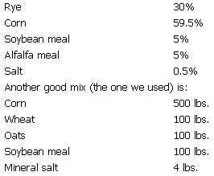

Home-smoked, mahogany-colored bacon, plump juicy hams, fresh spicy sausage and snowy lard are mostly nostalgic memories in this country today . . . but there's no reason why the time-honored art of curing and smoking meat can't be revived by the modern homesteader. As a matter of fact, there's a couple of very good reasons why it should be.
In this age of antibiotics, hormones, overcrowded feedlots, preservatives and quick-cure methods, producing one's own is practically the only way to be assured of quality meat. Furthermore, raising a hog is a project especially suited to the small or beginning farmer because (1) the capital investment is low, (2) the project is short term and (3) the family garden can provide a substantial amount of high-quality food in the pig's diet at negligible cost.
Last summer my husband, Arthur, and I undertook the project of raising and butchering two hogs . . . one for ourselves and one for a friend. We rendered the lard, made sausage, cured and smoked bacon and hams . . . all with reasonable success on the initial try. Our experience should offer encouragement to anyone else contemplating such an undertaking for the first time.
First of all, should you raise one pig or two? The fact is that a lone hog doesn't grow well at all (he likes to have company) . . . while today's average family probably doesn't eat more than one pig in a year. So what's to do?
There are at least two ways out of this dilemma. One is to find a friend who would like to raise his own porker but has no place to do it. Offer to raise a second pig for your comrade who will, in turn, bear his share of the cost and help with the butchering. It will be no more trouble for you to raise two hogs than one, the pigs will have each other for company and you'll be doing someone a favor besides!
A second alternative is to raise and butcher two pigs, one for home consumption and one to sell. Although all states have laws regarding the butchering and selling of meat (check with the nearest slaughterhouse), I believe that-in general practice-no one bothers the small farmer who raises for himself and sells to his friends. (A third alternative, of course, is the raising of one or more "extra" hogs for sale on the hoof on the open market. With the competition from commercial pig "factories" what it is today, however, this is no real alternative at all-Editor.)
Should you have doubts about the feasibility of selling home-butchered meat, find out before you start how many of your friends and neighbors would be interested in buying fresh pork next fall. If your experience is anything like ours, you'll find so many people hankering for real farm-raised meat that your pig will be "all 'et" before it's even raised!
Although fresh pork does not command a large price, you should be able to get back as much as you put into the pig you sell, plus a little extra to offset the cost of the one you keep for yourself. Furthermore, if you'd like to receive double the price for your product, you can do so by curing and smoking some of the meat before you offer it for sale. I think I'm safe in promising that you'll have no difficulty in selling your home-smoked bacon and hams. With such an investment of time and labor (the cost is minimal) your sales might offset the entire cos of raising the hogs, and your winter's supply of pork would be free!
Let me state, however, that there are no guarantees in this business and I'm not suggesting that this is a "sure, easy way to get cheap food". Consider the following before you start: (1) raising a healthy animal demands a certain amount of daily care and attention; (2) butchering is not a particularly pleasant task; (3) the meat must be cured over an extended period of time; and (4) it must be smoked and stored properly to insure its keeping qualities.
Then again, common sense and a little patience are the only basic requirements for being a successful hog-raiser and butcherer. If you like doing things for yourself and want to start depending on your own hands, this is a good place to start.
In farm communities, young pigs are usually offered for sale in the newspapers throughout the spring and summer months. If you don't find any listed in the papers, ask around at farm supply stores or drop in on a stock sale . . . but DON'T go dashing out to buy your pig with the first twinge of spring fever. To begin with your garden isn't even planted, much less ready to feed a porker . . . and if you buy too early you'll find yourself with an expensive overgrown pet by August or September.
There are three things you should know before you buy. First, pigs are weaned and sold when they're eight weeks old. (Don't buy pigs weaned at six weeks 'cause they won't be as healthy.) Secondly, it is generally agreed that a pig should be butchered when he's six months old; if you feed him beyond this age you'll only be putting money into him that you won't get back. Third, unless you have access to a walk-in cooler, you can't butcher until frosty weather arrives. The temperature must be down to between 30° and 40° Fahrenheit so the meat can hang and cool after butchering.
With this information, it's not very hard to decide when to buy . . . just subtract four months from the time that you can plan on near-freezing weather in your neck of the woods. Here in Michigan we butcher at the end of November so we buy our pigs in late July. Conveniently, the garden is just starting to produce some surplus at that time of the summer and it provides more as the pigs grow bigger and hungrier.
The following breeds are popular as lean-meat producers and shouldn't be hard to find: Yorkshire, Duroc-Jersey, Berkshire, Hampshire, Poland-China, Chester White and Tamworth. Ask for either sows (females) or barrows (castrated males), because the meat from a boar (uncastrated male) has a very unpleasant odor and taste. If you have a choice, select the huskiest looking animals of the litter . . . the ones that have short legs and plump looking hams. You'll need a wooden crate or box to transport them in because a pig doesn't handle like other animals (you can't put a collar around his neck and lead him where you want him to go).
It's been said many times and I'll say it again: the pig is not a dirty animal. It is his nature to root (he eats roots, seeds and nuts, and gets necessary minerals from the soil) and-if confined in a small space-he will root in his own manure. But this is not by choice. Provide your pig with plenty of good, clean rootin' by giving him as large an area of fresh sod as you can afford to fence, put the pigpen in a different spot each year . . . and he'll stay clean.
Since pigs will root an area free from quack grass in a season you might wish to confine your animals in a future garden plot where they can till the soil and fertilize it for you at the same time! The pig fence need not be high (three feet is tall enough) but it must be of woven wire and anchored at the bottom with boards or logs. Pigs don't go over fences but they do go under.
Most literature on housing for swine suggests a floorless, portable house which can be moved to different parts of the pen as manure accumulates in one area. The house can be built of scrap lumber or tin, and five feet square is an adequate size for two young hogs. In the summer, the structure will provide shade for the pigs' nearly hairless bodies (which are susceptible to sunburn). If you give the hogs straw during the winter, the animals will keep warm in their house by digging a nest and lining it with the bedding.
Supply your porkers with a large enough space in which to root, and you won't need to worry about them getting out of their pen. Some people put rings in their pigs' noses to keep them from rooting, but this deprives the animal of an important part of his diet. Good clean rootin' is essential to Porky's health . . . along with a constant supply of clean drinking water, fresh air and the opportunity to exercise. When the weather turns cold, you can help keep your hogs comfortable by warming their drinking water or liquid food. With these simple needs fulfilled and an adequate diet, your pigs should be a happy, healthy part of the homestead family.
A farmer who raises hogs strictly for profit will feed them the cheapest food he can get. This frequently includes stale white bread and large amounts of corn. When raising hogs for your own consumption, however, you'll surely be more careful of what they eat because the meat you produce can't be of any better quality than the feed that went into it. If you're aware of food quality, then you know that "organically" grown feed produces the highest quality meat of all. Unfortunately, "organic" feed is not usually available except to the farmer who raises it himself. So, until you're set up to produce your own you will have to use judgment in selecting the best feed available.
We did not buy any packaged, prepared hog food for our animals because such mixtures are expensive and almost sure to contain antibiotics and other additives. Instead, we bought grain at the Farm Bureau and had it mixed and ground to our specifications . . . it wasn't organic, but it wasn't full of expensive chemicals, either. We turned down white bread from a bakery, sour milk from a dairy and a crib full of dried-up corn of uncertain age. We accepted milk and household garbage from our neighbors, but didn't try to get any from restaurants.
What you feed your hogs will depend on what's available where you live and your ability to evaluate it. Don't be afraid to ask questions and-if you tell someone (politely) that his garbage isn't good enough for your pigs-it might set him to thinking a little.
In selecting food for your hogs, remember that they're omnivorous. That is, they both like and need (just like humans!) a widely varied diet in order to receive all the vitamins, minerals and protein that they require. The following list is by no means exhaustive but will give you an idea of some of the things that are good for pigs to eat.
(1) CORN, GRAIN AND MINERAL SALT. The grain may be fed whole but several varieties are usually mixed and ground together. Corn is good but should not be used exclusively, soybeans are essential for their high protein content and rye is favored by many farmers in this area. Here is a suggested mixture:
We fed this grain ration twice a day and added cracked corn when the hogs got older. Whenever the pigs looked like they were putting on too much weight, we stopped feeding the extra corn for a while.
(2) FRUIT, VEGETABLES AND GREENS. If your garden is unsprayed you can feel especially good about feeding the pea vines, cabbage leaves, squash, cucumbers and melons to your hogs. (They're sure to like the greens and their favorite forage-pigweed [also called lamb's-quarters]-is good eating for people as well as hogs. If you've never had any, pick a mess of the young, tender weeds this spring, clip off the roots and cook the whole plant as you would spinach.) Canning time will produce a bounty of peelings, core and pits for the pigs to eat.
(3) MILK. Very good for pigs if you're lucky enough to have a cow that produces a lot. For our piggers, milk came in three forms: they got all the whey from my cheese making; they received soured milk from a neighbor with a dairy herd; and they were fed reconstituted powdered milk. The whey and powdered milk were mixed with the hogs' grain ration to make a "soup", but they preferred to eat the clabbered, sour milk ungarnished.
(4) ALFALFA HAY. This growth food is rich in nitrogen, which is an important constituent of protein. Our pigs liked the hay so much that they rolled around in the forage before they got down to the business of eating it.
(5) PASTURE. Good pasture can supply from 20 to 300 of a pig's feed requirements, and one acre can feed twenty 100-lb. hogs. If you want to plant a pasture try alfalfa, clover and rape . . . or a mixture of rape and oats.
If you have a tendency to grow sentimental toward your hogs and postpone their butchering, remind yourself that-by the time the porkers are six months old-they'll be eating like mad and most of the garden goodies will be gone. Butchering becomes a matter of economic necessity to anyone who's not wealthy enough to support such a hungry pet. If you still feel too softhearted toward the pigs, or simply don't have the time to undertake such a large job, a slaughterhouse will do the work for you (for a reasonable fee) and return each animal in two impersonal-looking halves which will be a little easier for you to deal with.
If, however, you do intend to butcher your hogs-and you've never slaughtered a large animal before-by all means get some knowledge, experience or help (preferably all three) before you begin. You can get the experience by volunteering to help a friend or neighbor with his butchering . . . and you might obtain some help by seeking out a man fairly skilled in the art and offering him a portion of meat in exchange for his services. If neither of these avenues is open, go to the nearest slaughterhouse and ask the owner if you may come and watch on his next hog butchering day. Observe carefully, learn all you can and ask the meat inspector to tell you how to check the glands on the hog for TB or other disease. (EDITORS NOTE: You should also see pages 79-82 in MOTHER NO. 17, the article immediately following this piece and the next two MOTHERS for a serialized version of Morton Salt's excellent how-to book on butchering.)
When the old-timers slaughtered a hog, they utilized every portion that was useful or edible . . . including the tripe (intestines), head and feet. I'll have to confess that Arthur and I have not yet made headcheese, pickled pigs' feet or boiled tripe. Still I'm sure that these dishes can be tasty as well as nutritional, and for the sake of completeness I am including three recipes gleaned from old books, but not supplemented by any experience on my part:
Clean and scrape the hog's head and wash thoroughly. Thrust a hot poker into ears and nostrils. Cover the head with slightly salted water, add bay leaf and onion and simmer for several hours until the meat falls from the bones. Drain meat, pick it from the bones, shred it and season with salt, pepper, sage and thyme. Pack the meat tightly into a bowl or crock, add a small amount of the liquid in which it was cooked, place a cover on top and weight the cover down. Let stand for three days in a cold place while the headcheese solidifies, then slice and serve cold like luncheon meat.
Scrape and wash the pig's feet, soak them in cold water far two hours, wash and scrape again, then split the feet lengthwise. Cook the hocks in salted water flavored with vinegar, onion, sage, peppercorns and a few cloves. When done, pack the feet in small crocks, and cover with the water in which they were cooked. This liquid will form a gelatinous mass. Place a lid on the crock and keep in a cold place until needed for the table.
Tripe should be soaked for several hours for several then scraped clean put into salted water and simmered for two or three hour until it becomes jelly-like. Drain off the liquid and set it aside for later use. Put a tablespoon of butter into a saucepan. When the butter is hot add a teaspoonful of flour and cook a few minutes, but do not brown. Then slowly add one cup of milk and stir the mixture until smooth. Add 1/2 teaspoon salt, a dash of pepper and 1/2 teaspoon onion juice, then add one cup of boiled tripe and stir until the tripe is heated. Serve immediately.
THE NATURAL FOODS COOKBOOK by Beatrice Trum Hunter has several additional recipes for tripe.
Other portions of the hog that are more common to today's table-but still might be unfamiliar to some-are the heart, liver, kidneys and tongue. These organ meats are extremely rich in nutrients, especially the B vitamins, and should be eaten as fresh as possible for maximum food value.
The simplest way to prepare liver, heart and kidneys is to slice the meat and fry it with onions. The tongue must be boiled first, then chilled in cold water so that the skin may be peeled off: after that it can be eaten plain or made into hash with onions and potatoes. For a variety of recipes using these organ meats, I will again refer you to THE NATURAL FOODS COOKBOOK.
The fatty pieces which cling to the intestines, ribs and other parts of a hog may be rendered into lard. Before the availability of vegetable oils, this lard served the family for baking (it makes a beautiful, snowy pie crust), frying, preserving food and soap making. It was also a barter stock in trade. Whatever you intend to do with yours, however, the first step-which removes excess moisture and prevents spoilage-is called rendering. The operation is usually done outside because of the odor it produces:
Wash and chill the fat trimmings and cut them into small chunks. Then place the pieces in a heavy kettle (but do not fill it full) and cook slowly at 210-212°F, while stirring to prevent sticking. The temperature will rise as the water evaporates, but do not let it go higher than 255°F. As the water evaporates, brown cracklings will begin to float. Remove them . . . otherwise they'll sink to the bottom and burn. The lard will be done when the steam ceases to rise. If the lard is intended for consumption, strain it through cheesecloth; if not, place it directly into clean crocks. Cover and store in a cool, dry place.
Not too many years ago, the "cracklings" from the lard were a highly prized delicacy. I remember crunching on them-hot and crispy from the oven-myself. People didn't worry about cholesterol then, and they probably had no reason to, since they got a lot of exercise. If you want to try cracklings, they can be eaten plain, mixed with flour and made into biscuits or mixed with cornmeal and made into Pennsylvania Dutch scrapple.
1. Poll
2. Neck
3. Shoulder
4. Back
5. Loin
6. Rump
7. Tail
8. Ham
9. Hind leg
10. Hind flank
11. Belly
12. Side
13. Fore-flank
14. Foreleg
15. Jowl
16. Cheek
17. Snout
1. Hocks & Feet
2. Ham
3. Chops, Roast, Tenderloin, Canadian Bacon
4. Chops, Crown Roast
5. Bacon, Salt Pork
6. Ribs
7. Neck Roast, Stewed Neckbones
8. Picnic Ham, Shoulder Roast
9. Head
Besides the fatty pieces that you've rendered into lard, there will be-after the cutting up-a number of "trimmings". Rejoice, for these small pieces of meat that don't seem to belong anywhere are the stuff that sausage is made of.
The following instructions are for making sausage patties rather than the link sausages (which require packing the meat into cases made from the pig's intestines). As far as I can see, the sausage patties taste every bit as good and they're a whole lot easier to prepare.
First cut the meat that is to be used into chunks small enough to fit into the meat grinder. The recommended proportions are two parts lean meat to one part fat, but you don't need to follow that formula slavishly. Just use what you have. Then, for each pound of meat add one teaspoon salt, one teaspoon ground pepper and one teaspoon ground sage. This is the basic seasoning for sausage and is usually quite satisfactory, though you might want to experiment by adding some savory, allspice, cloves, ginger or sugar. The first time you make sausage it might be a good idea to try only a half-pound. After this is ground, you can fry some, taste it and then add either more meat or more seasonings to suit your taste.
Run the meat through the grinder twice to pulverize it and mix in the spices. That's all there is to it! Shape the meat into patties, wrap each one in wax paper (so there's a double layer between) and put them in the freezer. To preserve sausage without freezing, place the patties in sterilized jars or crocks, and pour half an inch of lard over them. The lard excludes the air and-as long as the coating isn't broken and the crocks are kept cool-the sausage should keep indefinitely.
Scrapple, it would seem, can be made from just about any part of the hog that one might choose. Some use cracklings and others neck bones as the major ingredient. We make ours from sausage the way that Arthur's father used to do back in New York State. The following recipe was reconstructed from memory and the measurements are approximate.
First cook one cup of rolled oats in enough water (about 2 cups) to make a thick porridge. Then do the same thing with a cup of cornmeal. Now mix these two cereals, add a pound of sausage and some more sausage seasoning. Pack the mixture into a bowl or crock, chill until firm, cut into slices and fry thoroughly. Serve the scrapple plain or dripping with maple syrup!
Now that we've disposed of the various small parts of the hog, let's get back to those two huge chunks of pork that are hanging out in the cold. The accompanying diagrams (see Figures 1 and 2) show two ways of looking at a hog, and should help the novice understand what cut of meat comes from where. I will not attempt to give detailed instructions for cutting up the meat, because this will depend largely upon how you want to use it. (EDITOR'S NOTE: See Morton Salt book installment following this article.)
There are two methods of curing to consider: the dry cure in which the salt mixture is rubbed on the meat, and the wet cure where the meat is immersed in brine. Some people prefer the dry method because it requires less handling of the meat. We like a wet cure because we think it offers more insurance against insect damage and spoilage. Some folks do larger cuts by the dry cure method and use a wet cure on smaller pieces of meat.
Regardless of which method you use, first weigh each piece to be cured, rub it with fine salt and allow the meat to drain, flesh side down, for 6 to 12 hours. Then proceed:
For each 100 pounds of meat use:
6-8 lbs. of salt (use the greater amount in warm weather)
2-2 1/2 lbs. brown sugar, molasses or syrup
2 ounces saltpeter (available from drugstore or meat packing plant)
5 ounces black pepper, ground
optional: sage, savory or pickling spices or . . .
Do NOT omit the saltpeter from this recipe!
Mix the ingredients well and rub the mixture over all the surfaces of the meat . . . then pack the pork in a barrel, tight wooden box or crock. The heavier pieces should be placed on the bottom, with the bacon and smaller chunks on top. After about three days, take the meat out and repack it to insure complete contact with the cure. Leave the pork until the cure is completed . . . this will take two days for each pound that each piece weighs. Thus, a 10-pound ham will take 20 days in cure while a 4-pound piece of bacon will be finished in only 8 days. The liquid formed from the meat juices will aid in curing the heavier pieces.
For each 100 lbs. of meat use:
9-10 lbs. of medium grain salt (use more salt in warm weather)
2-2 1/2 lbs, brown sugar or 4 lbs. unsulphured molasses or maple syrup
2 ounces saltpeter
4-4 1/2 gallons of water
First note the weight of each piece of pork and add the figures to get the total number of pounds of meat so that you can make up the required amount of brine. Pack the pork into crocks and fill them with water. Then remove the meat, pour the water into a kettle, add the preserving ingredients and mix up the curing brine. Ideally, this brine should be prepared a day ahead to insure its complete dissolution. Then the meat is packed in the crocks-with the largest cuts on the bottom-and covered with the brine.
Our instructions said to top each container with a hardwood cover and weight it down with a stone . . . but we didn't have any such lids so we laid a length of 2 by 4 across the top of every crock, weighted it down and wedged bottles between the beam and the chunks of pork in order to keep the meat submerged. Obviously, such an arrangement needs to be checked frequently since the meat mustn't be allowed to rise out of the brine. It's a good idea to pour the solution off about once a week, take the meat out and repack it in a different position.
Try to keep the crocks cool but not cold because, in spite of the large quantity of salt it contains, this solution will freeze if the temperature drops low enough. I'm not sure how cold it got in our spare room last year when the outside temperature fell to zero and below . . . but our brine froze and we had to move the crocks into the kitchen.
If the brine becomes "ropy"-which means that a scurry forms on its top-empty the crocks, wash them out and wash the meat thoroughly. It's then best to repack the pork in fresh brine but-if this isn't possible-you can salvage the original solution by boiling (but not burning!) it and skimming off the impurities.
The large pieces, like the hams, will require four days in cure for each pound of meat . . . thus a 20-pound ham will take 80 days! (Country living builds patience.)
The smaller pieces, like bacon, need only three days in cure per pound . . . so a five-pound piece of bacon will be ready in 15 days. Make yourself a chart showing when each chunk a meat should come out and post it on the wall somewhere. Sow every piece of pork in clean water for half an hour when it's taken out of the brine and - if by chance a chunk has cured too long - leave it an extra three minutes in the water for each day overtime in cure.
If your pieces of meat are all of different sizes, you may find yourself taking each one out at a different time. We tried to group ours by leaving some pieces in a few days extra and soaking them to compensate for the overcure. This way, we could smoke several pieces of meat at a time.
In order to smoke meat, one must either have a smokehouse or-as we do-access to a neighbor's. The building we use is made of wood, about three feet deep by five feet wide and eight feet high at the center of its peaked roof. A metal shield is propped against the back wall, a fire built on the dirt floor and the smoke allowed to escape under the eaves and through the shingled roof.
Most of the instructions and plans for building smokehouses feature a fire pit removed from the smokehouse itself . . . possibly for safety and efficiency. But all the smokehouses that I've ever seen in use have been the simple walk-in wooden buildings like the one owned by our neighbor. It's probably matter of individual taste. In building your smokehouse, don't be too concerned with providing vents through which the smoke can escape. The purpose is to hold the smoke in . . . it'll find its own way out.
Figure 3 shows a smoker-suitable for small quantities of meat-made from a barrel, placed on an incline and connected to a cement fire pit by means of a buried metal pipe.
For larger quantities and/or frequent use, a larger smokehouse is in order. Figure 4 shows such a design set over a pit and connected by a trench to a fire pit dug in the ground. The trench and fire pit are covered with sheet metal and the building has a false bottom - bored with holes for the smoke to pass through - about a foot above ground level.
These instructions and diagrams will give you an idea of what can be done . . . combine them, improvise and see what you can come up with. As a finishing touch, be sure to add poles-either of metal or green wood-from which to hang the meat.
Remember that the principle in smoking is to allow the pyroligneous acid in the smoke to permeate and slightly dry the meat without cooking it. The longer and more slowly a piece of meat is smoked, the longer it will keep. If the meat is overheated, it will soften and fall into the fire; if it's scorched, it'll harden, crack and turn rancid. The ideal temperature for smoking is between 110 and 120° F.
Armed with this information and with your smokehouse in order, you're ready to proceed. (We assume your meat has been properly cured, taken out on time, soaked and washed. You may want to wrap it in cheesecloth to keep off the soot, but this is not essential.)
Pass either a string or wire through the meat and form a loop around the pole. Hams should be hung with the heavier side up and the hock hanging down to retain the flavorful juices. The pieces of meat should not touch one another so that the smoke can circulate freely to all parts. Check each chunk for pieces that are "folded over" in a way that would prevent smoke penetration.
Use chips, sawdust and small pieces of wood for the fire. . . keeping in mind that it's smoke you're after, not heat. Apple, hickory, beech, sassafras, maple and other fruit and nut woods are all suitable. Do not use resinous woods. We got a lot of different advice about smoking: some people say to smoke constantly, others say smoke every second day. So we did it the way that was most convenient for us . . . we kept the fire going during the day and let it go out at night.
There are widely differing opinions-ranging from 2 days up to 10 weeks!-on how long meat should be smoked. Again we relied on our own judgment and that of our neighbor, who pronounced the bacon finished at the end of the third day and the hams on the fifth. The only criterion, apparently, is appearance . . . properly smoked meat should have from a light to dark mahogany color all over. The darker the color, the longer the meat will keep.
By the time you've tended the smokehouse for several days, your mouth will surely be watering for some of that well-earned meat. . . and it's probably extraneous to tell you that the bacon and hams should "season" for another 30 to 60 days to insure the best flavor. No doubt you'll start eating your product immediately . . . but for the pieces that you can't eat right away, here's how to go about storing them:
Optimal storage conditions are cool (43°F) and dry. This will discourage one of the main problems, which is insects, because they don't like dryness. For added protection, you can either (1) wrap the meat in cheesecloth or similar material, followed by layers of newspaper, and store in heavy paper bags, tied at the top or (2) wrap the meat in muslin and bury it in boxes containing ashes retrieved from the smoking. The ashes are supposed to increase the smoky flavor and this last method sounds like a good way to put away a ham until Easter time!
|
 FIGURE 2 |
|
|